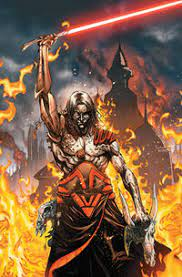
A failed Jedi who attempted to rule over both the Jedi and Sith by enhancing his body with their artifacts.
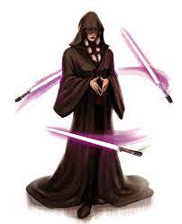
The founder of the Sith Triumvirate who later trained Meetra Surik to destroy them after being betrayed by her Sith apprentices.
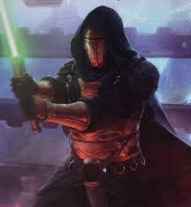
A Jedi who was brainwashed into becoming a Sith Lord before turning back to the light side and attempting to kill the Sith Emperor.
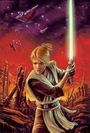
An exiled Jedi who cut herself off from the Force before being trained by Kreia to destroy the Sith Triumvirate.
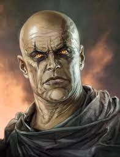
A Sith Lord in the Brotherhood of Darkness who orchestrated its destruction so he could establish the Rule of Two.
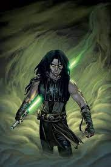
A Jedi during the Clone Wars who nearly turned to the dark side while infiltrating the Confederacy of Independent Systems.
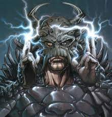
A former Tusken Raider and Jedi named A'Sharad Hett who survived Order 66 only to turned to the dark side to found the One Sith.
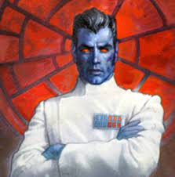
The only alien grand admiral who assumed control of the Galactic Empire after the death of Emperor Palpatine and waged war against the New Republic.
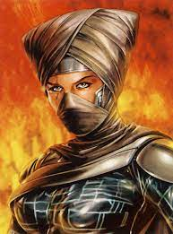
The Sith apprentice of Emperor Palpatine and Darth Vader who revived the Sith Order with the creation of Darth Caedus.
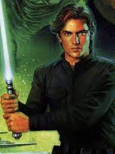
The son of Han Solo and Princess Leia Organa who was later seduced to the dark side by Lumiya and became the Sith Lord Darth Caedus.
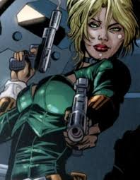
An Imperial agent and the mother of Cade Skywalker who led a secret double life as Moff Nyna Calixte.
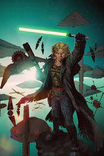
The descendent of Anakin and Luke Skywalker who survived the Third Jedi Purge and ended it by killing Darth Krayt.